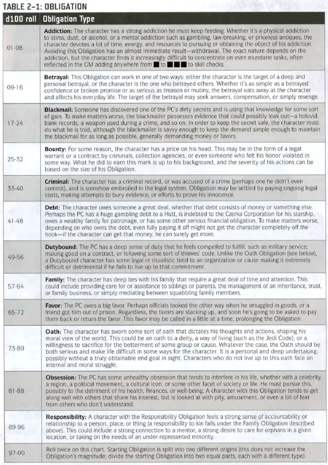

Your character's Obligation is some remnant of their life before the campaign, which may continue to affect them. Choose an Obligation (or roll randomly) from the table below. Note the Obligation on your character sheet, and try to elaborate on it in your background story. The amount of your starting Obligation will depend on the number of PCs in the party. Before each session, the GM will make a roll to determine whose Obligation (if anyone) is activate during the session. I usually pre-roll this at home, and include the results in your write-ups. If nobody's Obligation is active for the session, then there is no effect. If one of the PC's does have an active Obligation, then the GM will let each player know how they are affected. Typically, the PC whose Obligation is active will have -2 Strain Threshold, and the other party members will have -1 Strain Threshold. Sometimes, there will also be a narrative effect. For example, if your "Bounty" Obligation is active, a bounty hunter may show up to collect you. For more information about Obligation, see pages 38-43 of the Edge of the Empire CRB. |
|  |
Duty: If you're planning on taking a Career form Age of Rebellion, then you can take Duty, as outlined in the Age of Rebellion CRB. This will only come into play if you're party ends up working for the Rebel Alliance. Morality: If you're planning on taking a Career from Force and Destiny, then you will need to take Morality, as outlined in the Force and Destiny CRB. |